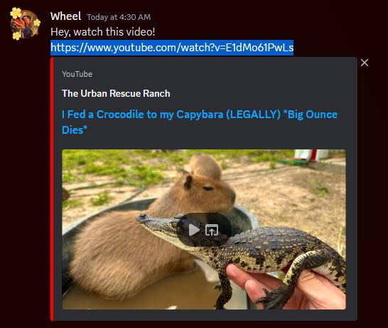

Accessing Youtube
Scroll down for step by step instructions.
Step 1 : Open an internet browser
Step 2 : Click the bar on top and type in 'youtube.com'
Step 3 : Press the enter button
Step 4 : Click the search bar.
Step 5 : Type in a video you want to see.
Step 6 : Press the enter button.
Step 7 : Play one of the videos by clicking them.
Step 8 : The video will now be loaded.
Note : To watch similar videos click the videos on the sidebar.
Note : To watch similar videos click the videos on the sidebar.
Youtube Links
Scroll down for step by step instructions.
Step 1 : Highlight a link and copy it

Step 2 : Copy the link with control + c
Step 3 : Open a browser
Step 4 : Right click on the search bar then press paste and go.
Note : The video will now load.
Note : Most of the time clicking the link will also work.